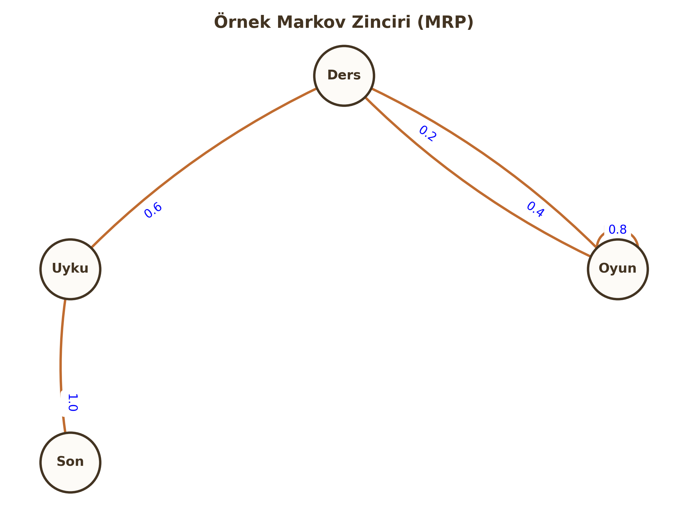

Pekiştirmeli Öğrenme (Reinforcement Learning) – Temel Yapı
Şimdiye kadar gözetimli (etiketli veri ile) öğrenmeyi gördük. Pekiştirmeli Öğrenme (RL) ise çok farklıdır: Burada bir öğretmen yoktur, sadece yapılan eylemlere karşılık alınan Ödül (Reward) veya Ceza vardır. Ajan, deneme-yanılma yoluyla hayatta kalmayı öğrenir.
1. Sequential Decision Making & Reward Hypothesis
RL, sıradan bir sınıflandırma problemi değildir; bir Sıralı Karar Verme (Sequential Decision Making) problemidir.
Ajan-Çevre Döngüsü (The RL Loop)
Sistem iki ana oyuncudan oluşur: Ajan (Agent) ve Çevre (Environment). Her $t$ zaman adımında:
- Ajan, çevrenin durumunu ($S_t$) gözlemler.
- Buna göre bir eylem ($A_t$) seçer.
- Çevre, bu eyleme tepki olarak ajana bir sonraki durumu ($S_{t+1}$) ve bir sayısal ödül ($R_{t+1}$) verir.

Reward Hypothesis (Ödül Hipotezi)
RL'in temel felsefesi şudur:
"Başarmak istediğimiz tüm hedefler, beklenen kümülatif ödülün (toplam getiri) maksimizasyonu olarak ifade edilebilir."
Return (Getiri - $G_t$) ve İskonto Katsayısı ($\gamma$)
Ajanın amacı anlık ödülü değil, uzun vadeli toplam ödülü ($G_t$) maksimize etmektir.
$$G_t = R_{t+1} + \gamma R_{t+2} + \gamma^2 R_{t+3} + \dots = \sum_{k=0}^{\infty} \gamma^k R_{t+k+1}$$
Neden $\gamma$ (Discount Factor) Kullanıyoruz?
$\gamma \in [0, 1]$ aralığında bir sayıdır.
- Matematiksel Yakınsama: Sonsuz adımda ödüllerin toplamının sonsuza gitmesini engeller.
- Belirsizlik: Gelecek belirsizdir; şu anki ödül, gelecekteki vaatten daha değerlidir (Paranın zaman değeri gibi).
Kritik Sınav Bilgisi
- $\gamma = 0$: Ajan "Miyop"tur. Sadece şu anki ödüle ($R_{t+1}$) bakar.
- $\gamma \to 1$: Ajan "İleri Görüşlü"dür. Gelecekteki ödüller de şimdikiler kadar önemlidir.
2. States, Histories and Policies
History ($H_t$) vs State ($S_t$)
- History (Tarihçe): Başlangıçtan bugüne kadar olan tüm gözlem, eylem ve ödüllerin ham dizisidir. $$H_t = O_1, R_1, A_1, \dots, A_{t-1}, O_t, R_t$$
- State (Durum): Tarihçenin, geleceği belirlemek için kullanılan özetlenmiş halidir.
The Markov Property (Markov Özelliği)
RL'de kullanılan durumlar genellikle "Markov" özelliğine sahip kabul edilir.
Tanım: "Gelecek, geçmişten bağımsızdır; sadece şimdiki duruma bağlıdır."
$$P[S_{t+1} | S_t] = P[S_{t+1} | S_1, \dots, S_t]$$
Yani; $S_t$ durumundaysanız, buraya nasıl geldiğinizin (History) bir önemi yoktur. Yapılacak hamle için $S_t$ tüm bilgiyi içerir.
Politika (Policy - $\pi$)
Ajanın beynidir. Bir durumda hangi eylemi yapacağını belirleyen fonksiyondur.
- Deterministik Politika: Her durum için tek bir eylem üretir. $$a = \pi(s)$$
- Stokastik Politika: Eylemlerin bir olasılık dağılımını üretir. (Örn: %70 ileri, %30 sağa). $$\pi(a|s) = P[A_t = a | S_t = s]$$
3. Markov Processes (MRP & MDP)
RL problemlerini matematiksel olarak modellemek için Markov süreçlerini kullanırız.

A. Markov Reward Process (MRP)
Sadece durumların ve ödüllerin olduğu, Eylemsiz (No Action) süreçtir. Bir şişenin nehirde sürüklenmesi gibidir; kontrol sizde değildir.
Bileşenler: $ S, P, R, \gamma $
- $S$: Durum uzayı.
- $P$: Geçiş Matrisi. $P_{ss'} = P[S_{t+1}=s' | S_t=s]$ (s'den s''e geçme olasılığı).
- $R$: Ödül fonksiyonu. $R_s = \mathbb{E}[R_{t+1} | S_t=s]$.
- $\gamma$: İskonto katsayısı.
Durum Değer Fonksiyonu ($v(s)$): Bir $s$ durumunda bulunmanın ne kadar "değerli" olduğunu söyler. $$v(s) = \mathbb{E} [G_t | S_t = s]$$
B. Markov Decision Process (MDP)
MRP'ye Ajan (Karar verici) eklenmiş halidir. RL'in temelini oluşturur.
Bileşenler: $ S, A, P, R, \gamma $
- $A$: Eylem uzayı (Ajanın yapabileceği hareketler).
Artık geçişler ve ödüller sadece duruma değil, seçilen eyleme de bağlıdır: $$P_{ss'}^a = P[S_{t+1}=s' | S_t=s, A_t=a]$$ $$R_s^a = \mathbb{E}[R_{t+1} | S_t=s, A_t=a]$$
Öğrenci Notu
MDP'de amaç, toplam ödülü maksimize edecek en iyi politikayı ($\pi^*$) bulmaktır. MRP'de ise sadece süreci izler ve değerini hesaplarız.
4. Model-Based vs Model-Free RL
Bu ayrım, ajanın çevre hakkında ne bildiğiyle ilgilidir.
Model-Based RL (Model Tabanlı)
Ajan, çevrenin nasıl çalıştığını bilir veya öğrenmeye çalışır.
- Model: Geçiş olasılıkları ($P$) ve ödül fonksiyonudur ($R$).
- Ajan, eylem yapmadan önce kafasında simülasyon yapabilir ("Eğer sağa gidersem %90 ihtimalle duvara çarparım" diyebilir).
- Bu işleme Planlama (Planning) denir. (Örn: Satranç).
Model-Free RL (modelsiz)
Ajan çevrenin kurallarını ($P$ ve $R$) bilmez.
- Sadece deneyimleyerek (Trial-and-Error) öğrenir.
- "Burası tehlikeli" der ama nedenini (olasılıkları) matematiksel olarak bilmez.
- Q-Learning gibi popüler algoritmalar bu sınıftadır.